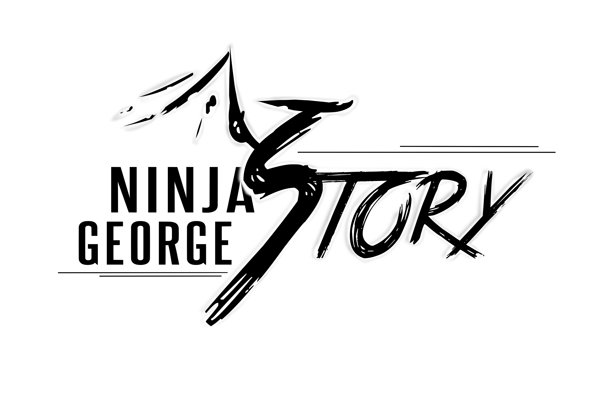
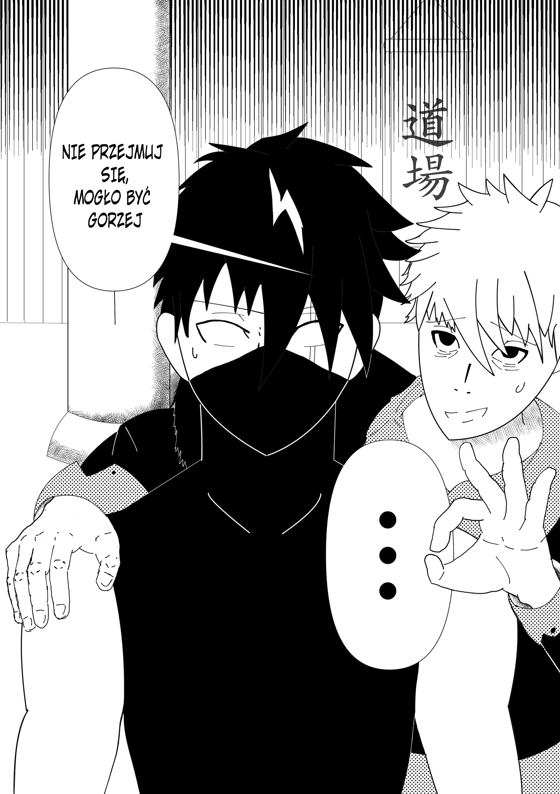

Dawid Wasilewski
Graphic Designer | Artysta
Pracuję nad autorskim projektem komiksu pod tytułem "Ninja George: Story". Historia kręci się wokół chłopca, na którego wioskę najechało wojsko. Jego matka zginęła z ręki ninja z klanu smoka. Młody George zostaje uratowany przez staruszka, który później okazuje się mistrzem dojo na skraju lasu. Chłopiec poprzysiągł zemstę na klanie smoka i tym samym wplątuje się w wielką intrygę.

